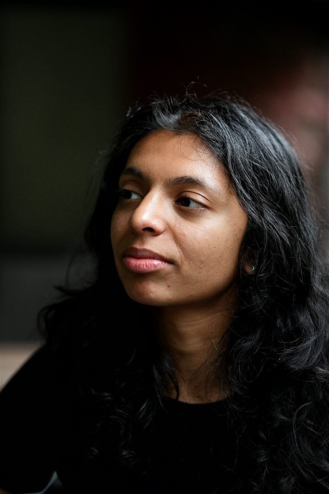
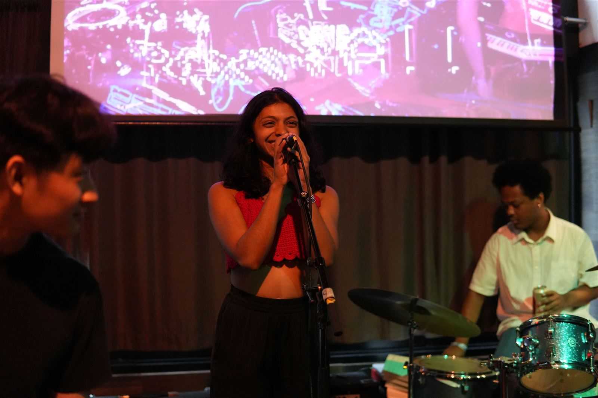
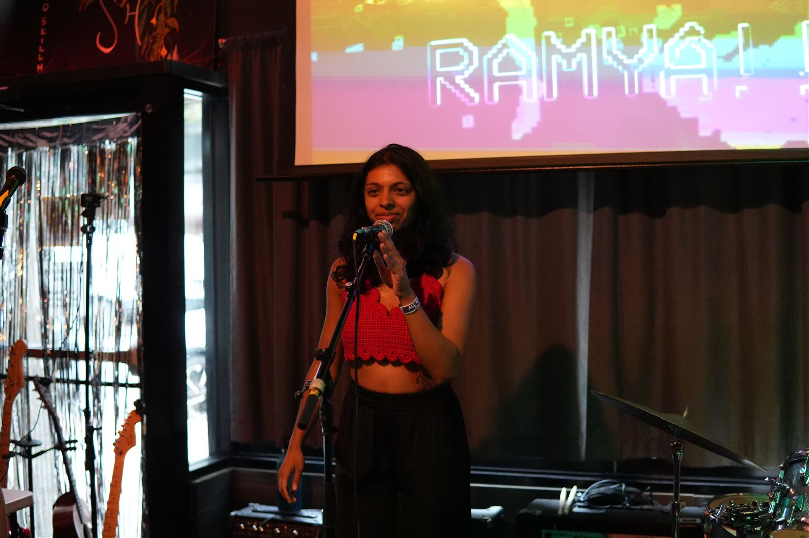
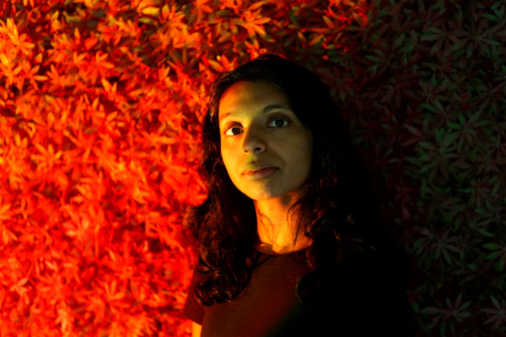

RAMYA!!
Melodic 80s/00s-influenced alt-pop with an underlying existential dread
Bio
Short bio:
RAMYA!! is 5'2" but her voice is 6'6", and she uses it to sing alt-pop depression ballads, anxiety bangers, and reflections on herself and the world.
Full bio:
RAMYA!! is concerned with the current state of the world, and keeps getting told her voice is smooth, versatile, and beautiful; she's hoping that singing about those concerns moves the needle in some way.
In July 2026, she released her debut album hysteresis, an 80s/00s-influenced alt-pop record about navigating a layoff, a move, and 1-2 other major life changes.
She's currently working on a second album, sisyphus, which looks at recurring struggle through the lens of New York City in the 2020s.
You don't really have to refer to her as RAMYA!!, Ramya also works, please don't yell at her.
Photos



Music & Video
- Listen: https://open.spotify.com/track/727fn0XlMJjpwhdVP55Alj
- Watch: https://drive.google.com/file/d/1unbaClOWPeDaqYsQ2HECNX3qniGYPR6K/view
Press
"Synthy indie-pop-rock, heart-on-your-sleeve writing and all the sweet ingredients of an emerging artist worth keeping an eye on."
— Happy Mag
Follow
Booking & Contact
RAMYA!!
click for email
Or use the contact form.